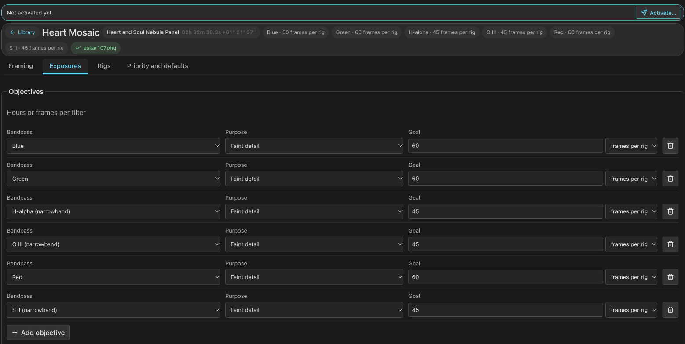
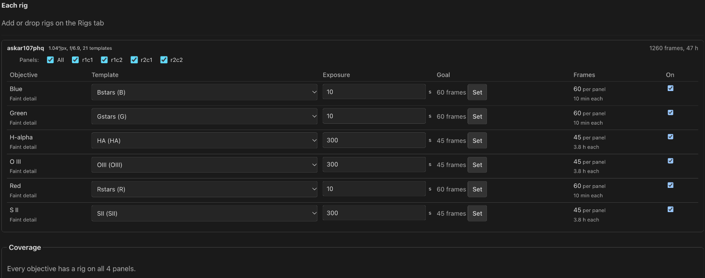
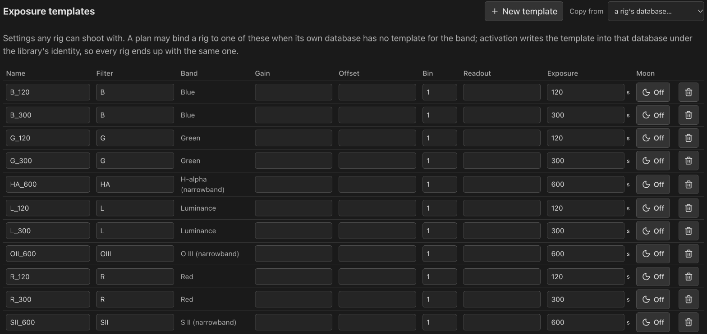
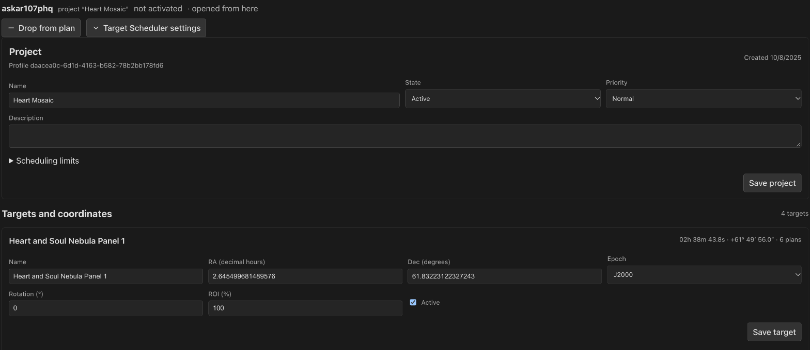
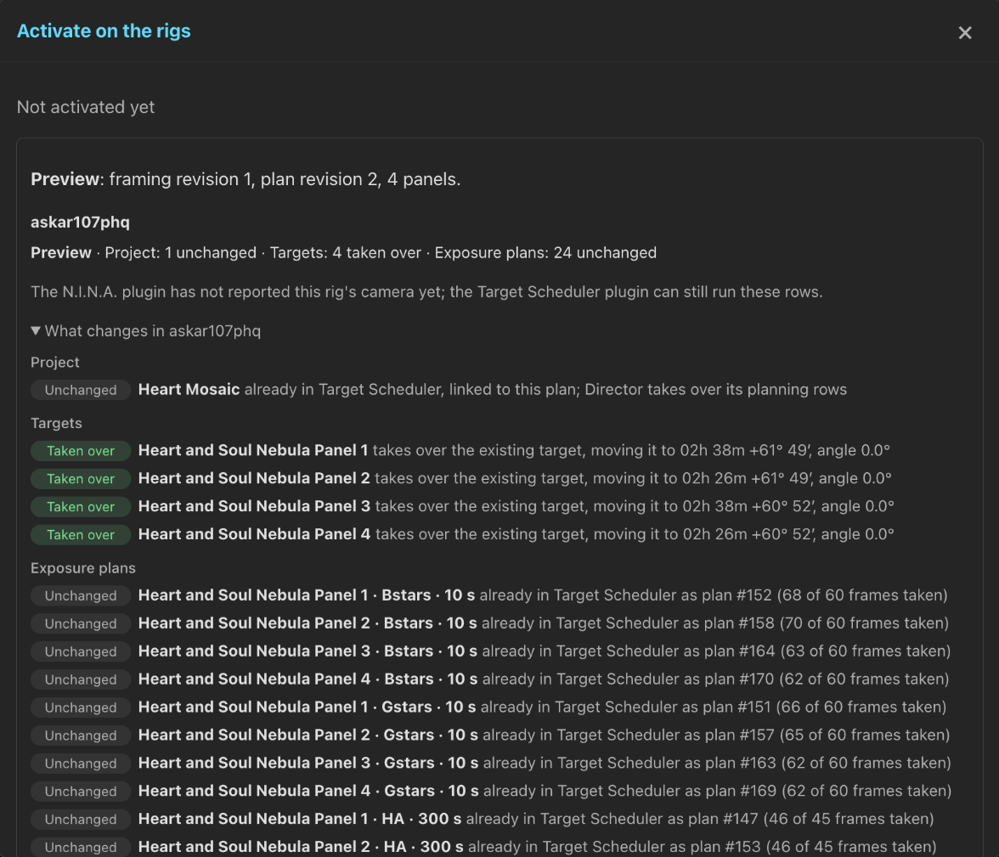

Exposures & Activation
Set goals per filter, choose how each rig shoots them, and write the plan into each rig's Target Scheduler database. Activation previews every row before it writes, and never touches captured frames or grades.
Set goals per filter
The Exposures tab says what the plan wants. An objective is one bandpass with a goal in accepted hours or accepted frames. For each rig in the plan, it shows the template, exposure length and frames that meet the goal.

- Hours become frames per rig through that rig's exposure length, so a fast rig under bright skies shoots more short frames than a slow rig under dark skies for the same goal.
- Switching a goal between hours and frames converts the number: 6 h at 300 s becomes 72 frames and back.
- Each rig takes its first template whose filter resolves to the band.
Filter names map to bands:
L,LumandClearare luminance;Ha,H-alphaandHa 3nmare H-alpha;OIIIandO3are OIII. - The exposure starts from the template's default, or from the rig's optics and sky: 120 s broadband and 300 s narrowband at f/5 under Bortle 4 to 5, longer for slower optics and darker skies.
- A rig with no template for a band sits that band out, and says so.

A rig's own goal
A rig can carry its own goal for an objective in place of the plan's. For an hours goal, a rig well away from f/5 is offered a goal that reaches the same depth at its focal ratio, such as 24 h at f/10 for 6 h at f/5. A suggestion applies only when clicked; × returns the rig to the plan's goal. Activation and visibility estimates use each rig's own goal.
Panels per rig
On a mosaic, each rig's section has a panel chooser: every panel by default, or only the panels that rig should shoot. A coverage box names any objective and panel no rig covers. Each rig's row totals its frames and hours across the panels it owns.
Exposure template library
Settings › Exposure templates holds templates that belong to no database: a name, the filter as the rig calls it, gain, offset, binning, readout mode and a starting exposure. Bind a rig to one when its database has no template for a band, so a second or third rig joins a plan without templates of its own.
- Activation writes the template into the rig's database under the library's GUID, so every rig ends up with the same template.
- Once a database holds the library template, written by activation or with the same filter, camera settings and Moon rules, the plan uses the rig's own copy.
- Copy from lists a rig's templates and copies any of them into the library.
- Edit rows in place. Removing a template asks first; plans that chose it keep their copy of its settings.

Expand Moon on a template for per-filter Moon avoidance: full-Moon separation, half-width in days, Moon-down only, and altitude relaxation. These follow Target Scheduler's Moon avoidance formula, and activation writes them into the rig's template.
The Rigs tab
The Rigs tab holds one block per rig: its database's project, its templates and frames, what activation does there, and its Target Scheduler settings and targets once the database has the project. Rigs outside the plan fold away.
- Add a rig offers every rig, with a new project that activation creates, or with a project its database already has.
- Drop from plan switches the rig's exposures off. Adding the rig back turns the same exposures on again.
- Detach gives a database's project a plan of its own. See Attach and detach.
- Scheduling limits for every rig sets this plan's own Target Scheduler limits. See Scheduling limits.

Activate
Save every edit first. While the rig databases lack the saved plan, a bar at the top asks for an activation; Activate… opens the preview over the page. The summary's activation line opens the same dialog at any time, to push the last activation again.
The preview lists, per rig database, every row it would write:
| Label | Meaning |
|---|---|
create | A new project, target, exposure plan or template. |
adopt | An existing row taken over, with what changes. |
update | A row from an earlier activation that changes. |
disable | An exposure plan nothing asks for now, turned off; or a project set Inactive. |
unchanged | A row that already holds the plan's values. |
keep | The rig's own plans no objective asks for, left as they are. |
It also names any objective and panel no rig covers, and why a rig is skipped: no registered database, a Target Scheduler schema older than 22, no N.I.N.A. profile yet, a row with no GUID (see Fill in GUIDs), or a file that cannot be opened or written.

Apply is refused when the framing, plan or database changed since the preview. Each rig database then commits on its own: a busy or read-only rig says why, and the others apply. A rig database waits up to a minute for its write lock, since N.I.N.A. can hold the file that long.
Before asking, the page runs the same activation on an in-memory copy of each
rig's planning tables. It never locks N.I.N.A.'s database, and a rig whose rows
all read unchanged already holds the plan.
What activation writes
- One Target Scheduler project per rig, named after the plan, Active, marked as a mosaic when there is more than one panel, under the N.I.N.A. profile that owns the database's projects, with the plan's scheduling limits.
- One target per panel the rig owns, at the panel center with the plan's camera angle, or the rig's own when it is framed separately. An existing target is taken over rather than doubled: the one with the panel's name, else the one at the panel's place, else a single-panel plan's only target.
- One exposure plan per objective and panel, bound to the
chosen template, with
desiredset to the frames that objective needs at the rig's exposure length. An existing plan for the same work is taken over, keeping its acquired and accepted counts.
A second activation updates the same rows in place. Names you edited stay. Acquired and accepted counts, captured frames and grades are never touched. Panels removed from the framing leave their targets behind.
Rigs turned off and work that goes away
A rig turned off or dropped from the plan has its Target Scheduler project set Inactive; turning it on again sets it Active. A project you made Inactive yourself stays Inactive. Exposure plans the plan no longer asks for (an objective removed, a band changed, a panel gone) are turned off. Work that comes back takes its old exposure plans back, frames and all, instead of adding twins.
Keep changes made in N.I.N.A.
When a rig's rows changed in N.I.N.A. after an activation and they are the ones to keep, the rig's block in the preview offers Take Target Scheduler's values. It writes that rig's frame counts, templates, exposure lengths and moved targets into the saved plan instead of overwriting them, and says what it left as planned.
Rigs at another site
A rig can run on another PSF Guard at a remote observatory, with its own database that N.I.N.A. writes. To plan for it here:
- Register that PSF Guard under Settings › Remote PSF Guard and pull its catalog into a database on this server. The copy is the rig here.
- In the copy's rig setup, set Remote site to the peer.
- Activate as usual. Apply writes the copy, then pushes the planning rows (projects, targets, exposure plans, templates) to the peer through Sync's planning push. Captures and grades never travel this way.
The report says per rig whether the peer took the rows. When a site was offline at Apply, push the last activation again from the activation dialog.